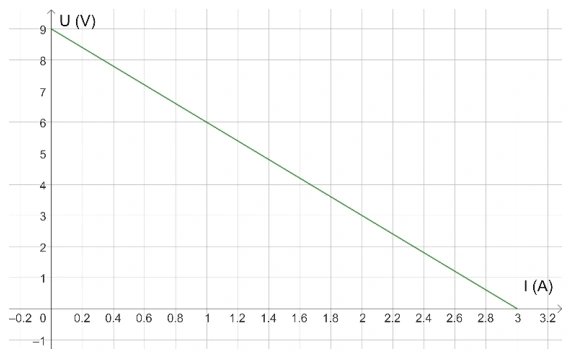
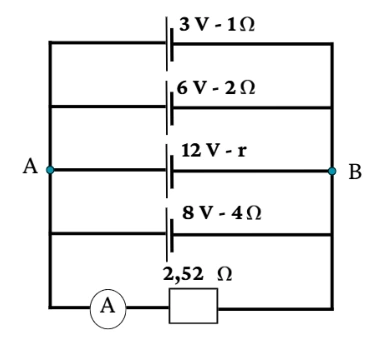
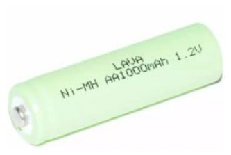
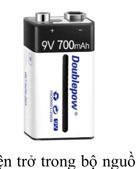
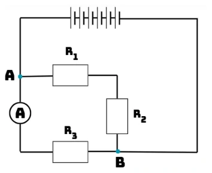
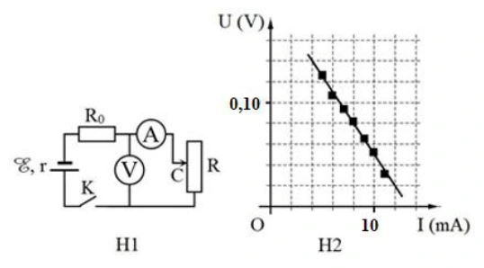
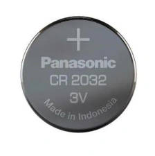
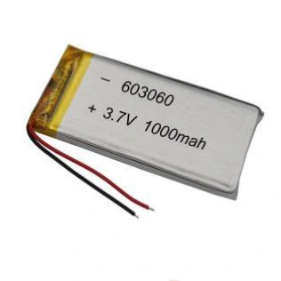
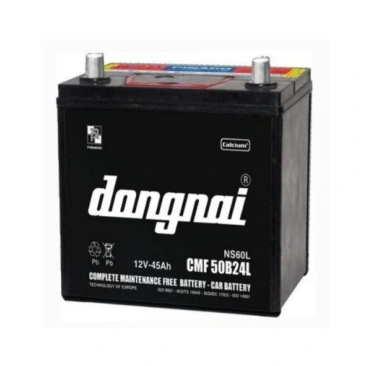

Bài tập — Bài 3 — Nguồn điện, suất điện động và điện trở trong
Hệ bài tập được biên soạn theo các dạng xuất hiện trong bộ tài liệu Vật lí 11 của dự án. Câu hỏi được giữ ngắn, trực tiếp; độ khó tăng dần và không cố tình thêm dữ kiện gây nhiễu.
Phần A — Trắc nghiệm 4 lựa chọn
Bài 1 — Mức 1 — Nhận biết
Suất điện động của nguồn được định nghĩa bởi
A. \(\mathcal E=A_{ng}/q\).
B. \(\mathcal E=q/A_{ng}\).
C. \(\mathcal E=IR\).
D. \(\mathcal E=P/t\).
Đáp án và lời giải
Chọn A, với \(A_{ng}\) là công của lực lạ bên trong nguồn để dịch chuyển điện tích q.
Bài 2 — Mức 1 — Nhận biết
Nguồn có suất điện động \(12\) V, điện trở trong \(1\,\Omega\), đang phát dòng \(2\) A. Hiệu điện thế hai cực nguồn là
A. \(10\) V.
B. \(12\) V.
C. \(14\) V.
D. \(24\) V.
Đáp án và lời giải
Chọn A. Khi nguồn phát điện: \(U=\mathcal E-Ir=12-2=10\) V.
Bài 3 — Mức 1 — Nhận biết
Khi mạch ngoài hở, dòng điện bằng 0, hiệu điện thế hai cực của nguồn lí tưởng mô hình hóa bằng
A. 0.
B. \(Ir\).
C. \(\mathcal E\).
D. \(\mathcal E/2\).
Đáp án và lời giải
Chọn C vì sụt áp trong bằng 0.
Bài 4 — Mức 1 — Nhận biết
Điện trở trong của nguồn gây ra
A. sụt áp \(Ir\) khi có dòng.
B. tăng vô hạn điện áp ngoài.
C. làm dòng bằng 0 trong mọi mạch.
D. không ảnh hưởng mạch.
Đáp án và lời giải
Chọn A.
Phần B — Đúng/Sai
Bài 5 — Mức 2 — Thông hiểu
Nguồn đang phát điện:
a) \(U=\mathcal E-Ir\).
b) Khi I tăng, U thường giảm nếu \(\mathcal E,r\) không đổi.
c) Khi hở mạch, U bằng suất điện động.
d) Suất điện động có đơn vị ampe.
Đáp án và lời giải
a) Đúng. b) Đúng. c) Đúng. d) Sai: đơn vị vôn.
Bài 6 — Mức 2 — Thông hiểu
Về công của nguồn:
a) \(\mathcal E\) biểu thị công của lực lạ trên một đơn vị điện tích.
b) Công của nguồn trong thời gian t có thể viết \(A_{ng}=\mathcal E It\) khi dòng không đổi.
c) Điện trở trong càng lớn luôn làm hiệu suất nguồn tăng.
d) Nguồn thực có thể nóng lên do tổn hao trong.
Đáp án và lời giải
a) Đúng. b) Đúng. c) Sai. d) Đúng.
Phần C — Trả lời ngắn
Bài 7 — Mức 3 — Vận dụng
Nguồn có \(\mathcal E=9\) V, \(r=0,5\,\Omega\), phát dòng \(I=1,2\) A. Tính U hai cực.
Đáp án và lời giải
\(U=9-1,2\cdot0,5=8,4\) V.
Bài 8 — Mức 3 — Vận dụng
Một nguồn hở mạch đo được \(12\) V. Khi phát dòng \(2\) A, hiệu điện thế hai cực còn \(11\) V. Tính điện trở trong.
Đáp án và lời giải
\(\mathcal E\approx12\) V khi hở mạch. \(r=(\mathcal E-U)/I=(12-11)/2=0,5\,\Omega\).
Bài 9 — Mức 3 — Vận dụng
Nguồn \(6\) V, \(r=1\,\Omega\) phát dòng \(0,50\) A trong 2 phút. Tính công của nguồn và nhiệt tỏa trên điện trở trong.
Đáp án và lời giải
\(t=120\) s. Công nguồn \(A=\mathcal E It=6\cdot0,5\cdot120=360\) J. Nhiệt trên r: \(Q=I^2rt=0,25\cdot1\cdot120=30\) J.
Phần D — Vận dụng và vận dụng cao
Bài 10 — Mức 4 — Vận dụng cao
Một nguồn có \(\mathcal E=12\) V. Khi dòng phát là \(1\) A, U hai cực \(11,5\) V. Khi dòng phát \(3\) A, U hai cực là bao nhiêu nếu mô hình nguồn tuyến tính không đổi?
Đáp án và lời giải
Từ trạng thái đầu: \(r=(12-11,5)/1=0,5\,\Omega\).
Ở \(I=3\) A:
\(U=\mathcal E-Ir=12-3\cdot0,5=10,5\) V.
Ta đã dùng giả thiết \(\mathcal E\) và r không đổi trong khoảng làm việc.
Ngân hàng bài tập mở rộng
Nhận biết — Trả lời ngắn
Bài 11
Suất điện động của bộ nguồn điện một chiều là \(\xi=9\,\mathrm V\). Công của lực lạ làm dịch chuyển một lượng điện tích \(q=2\,\mathrm{mC}\) giữa hai điện cực bằng bao nhiêu mJ?
Đáp án và lời giải
Đáp án: \(18{,}0\,\mathrm{mJ}\)
Hướng dẫn giải:
Công của lực lạ là \(A=\xi q\), nên
\(A=9\cdot2\times10^{-3}=0{,}018\,\mathrm J=18{,}0\,\mathrm{mJ}\).
Bài 12
Trong việc thiết kế mạch điện, để có được các suất điện động thích hợp. Xét ba pin giống nhau mắc nối tiếp thành một bộ nguồn, rồi mắc hai đầu một biến trở vào hai đầu bộ nguồn thành một mạch kín. Đồ thị biểu diễn sự phụ thuộc của điện áp hai đầu bộ nguồn \(U\) và cường độ dòng điện \(I\) trong mạch như hình. Tìm suất điện động của mỗi pin.

Đáp án và lời giải
Đáp án: \(3\,\mathrm V\)
Hướng dẫn giải:
Với bộ nguồn, \(U=\xi_b-Ir_b\). Từ đồ thị có hai điểm \((I,U)=(0,9)\) và \((3,0)\), do đó
\(\xi_b=9\,\mathrm V\), \(r_b=3\,\Omega\).
Ba pin giống nhau mắc nối tiếp nên \(\xi_b=3\xi\). Suy ra
\(\xi=\dfrac{\xi_b}{3}=3\,\mathrm V\).
Đối chiếu nguồn
Ô “Đáp án” trong PDF ghi 9, nhưng chính phần hướng dẫn giải của PDF kết luận suất điện động mỗi pin là \(3\,\mathrm V\). Kết quả độc lập từ đồ thị và cách mắc nối tiếp cũng cho \(3\,\mathrm V\).
Bài 13
Qua một nguồn điện có suất điện động không đổi, để chuyển một điện lượng \(q_1=5\,\mathrm C\) thì lực lạ phải sinh một công \(A_1=20\,\mathrm{mJ}\). Để chuyển một điện lượng \(q_2=20\,\mathrm C\) qua nguồn thì lực lạ phải sinh một công bằng bao nhiêu mJ?
Đáp án và lời giải
Đáp án: \(80\,\mathrm{mJ}\)
Hướng dẫn giải:
Vì \(A=\xi q\) và \(\xi\) không đổi nên
\(\dfrac{A_2}{A_1}=\dfrac{q_2}{q_1}\).
Suy ra \(A_2=20\cdot\dfrac{20}{5}=80\,\mathrm{mJ}\).
Bài 14
Suất điện động của một pin là \(\xi=1{,}5\,\mathrm V\). Để dịch chuyển một điện tích \(q\) từ cực âm tới cực dương bên trong nguồn điện cần tốn một công \(A=7{,}5\,\mathrm J\). Tính giá trị điện tích \(q\).
Đáp án và lời giải
Đáp án: \(5\,\mathrm C\)
Hướng dẫn giải:
Từ \(A=\xi q\), ta có
\(q=\dfrac{A}{\xi}=\dfrac{7{,}5}{1{,}5}=5\,\mathrm C\).
Bài 15
Cho mạch điện như hình vẽ. Biết ampe kế lí tưởng chỉ \(1{,}92\,\mathrm A\). Tính điện trở trong \(r\).

Đáp án và lời giải
Đáp án: \(3\,\Omega\)
Hướng dẫn giải:
Hiệu điện thế giữa hai đầu \(AB\):
\(U_{AB}=IR=1{,}92\cdot2{,}52=4{,}8384\,\mathrm V\).
Với từng nhánh nguồn, dùng \(I_k=(\xi_k-U_{AB})/r_k\). Theo dữ kiện nguồn:
\(I_1=(3-4{,}8384)/1=-1{,}8384\,\mathrm A\),
\(I_2=(6-4{,}8384)/2=0{,}5808\,\mathrm A\),
\(I_4=(8-4{,}8384)/4=0{,}7904\,\mathrm A\).
Từ định luật nút theo sơ đồ nguồn, suy ra \(I_3\approx2{,}3872\,\mathrm A\), nên
\(r=(8-4{,}8384)/2{,}3872\approx3\,\Omega\).
Nhận biết — Trắc nghiệm 4 lựa chọn
Bài 16
Đơn vị của suất điện động là
A. A.
B. V.
C. F.
D. V/m.
Đáp án và lời giải
Đáp án: B
Hướng dẫn giải:
Suất điện động có đơn vị là vôn (V). Vậy chọn B.
Bài 17
Suất điện động của nguồn điện là đại lượng đặc trưng cho khả năng
A. sinh công của mạch điện
B. thực hiện công của nguồn điện.
C. tác dụng lực của nguồn điện.
D. dự trữ điện tích của nguồn điện.
Đáp án và lời giải
Đáp án: B Hướng dẫn giải:
Suất điện động là công của nguồn trên một đơn vị điện tích; khi nguồn phát điện, hiệu điện thế hai cực dùng \(U=\mathcal E-Ir\).
Đối chiếu kết quả với các lựa chọn, phương án phù hợp là B. thực hiện công của nguồn điện.
Bài 18
Hiệu điện thế giữa hai cực của một nguồn điện có độ lớn
A. luôn bằng suất điện động của nguồn điện khi có dòng điện chạy qua nguồn.
B. luôn lớn hơn suất điện động của nguồn điện khi có dòng điện chạy qua nguồn.
C. luôn nhỏ hơn suất điện động của nguồn điện khi có dòng điện chạy qua nguồn.
D. luôn lớn hơn hoặc bằng suất điện động của nguồn điện khi có dòng điện chạy qua nguồn.
Đáp án và lời giải
Đáp án: C Hướng dẫn giải:
Suất điện động là công của nguồn trên một đơn vị điện tích; khi nguồn phát điện, hiệu điện thế hai cực dùng \(U=\mathcal E-Ir\).
Đối chiếu kết quả với các lựa chọn, phương án phù hợp là C. luôn nhỏ hơn suất điện động của nguồn điện khi có dòng điện chạy qua nguồn.
Bài 19
Kết luận nào sau đây đúng khi nói về tác dụng của nguồn điện? Nguồn điện dùng để
A. tạo ra và duy trì sự chênh lệch điện thế.
B. tạo ra các ion dương.
C. tạo ra các ion âm.
D. chuyển hóa điện năng thành các dạng năng lượng khác.
Đáp án và lời giải
Đáp án: A Hướng dẫn giải:
Suất điện động là công của nguồn trên một đơn vị điện tích; khi nguồn phát điện, hiệu điện thế hai cực dùng \(U=\mathcal E-Ir\).
Đối chiếu kết quả với các lựa chọn, phương án phù hợp là A. tạo ra và duy trì sự chênh lệch điện thế.
Bài 20
Biểu thức tính công của nguồn điện có dòng điện không đổi là
A. \(A=UIt\).
B. \(A=\xi It\).
C. \(A=\xi It+r^2It\).
D. \(A=\xi It-r^2It\).
Đáp án và lời giải
Đáp án: B
Hướng dẫn giải:
Công của nguồn điện trong thời gian \(t\) là \(A=\xi q\), với \(q=It\). Do đó \(A=\xi It\).
Vậy chọn B.
Bài 21
Với nguồn điện là pin, ắc quy, thì “lực lạ” có bản chất là
A. lực điện từ.
B. lực hóa học.
C. lực tĩnh điện.
D. lực điện trường.
Đáp án và lời giải
Đáp án: B Hướng dẫn giải:
Suất điện động là công của nguồn trên một đơn vị điện tích; khi nguồn phát điện, hiệu điện thế hai cực dùng \(U=\mathcal E-Ir\).
Đối chiếu kết quả với các lựa chọn, phương án phù hợp là B. lực hóa học.
Bài 22
Một pin sau một thời gian đem sử dụng thì
A. suất điện động và điện trở trong của pin đều tăng.
B. suất điện động và điện trở trong của pin đều giảm.
C. suất điện động của pin tăng và điện trở trong của pin giảm.
D. suất điện động của pin giảm và điện trở trong của pin tăng.
Đáp án và lời giải
Đáp án: D Hướng dẫn giải:
Suất điện động là công của nguồn trên một đơn vị điện tích; khi nguồn phát điện, hiệu điện thế hai cực dùng \(U=\mathcal E-Ir\).
Đối chiếu kết quả với các lựa chọn, phương án phù hợp là D. suất điện động của pin giảm và điện trở trong của pin tăng.
Bài 23
Một pin có thông số như hình. Biết cường độ dòng điện mà nó cung cấp là \(5\,\mathrm{mA}\). Thời gian sử dụng của pin là

A. 200 h.
B. 1000 h.
C. 5000 h.
D. 500 h.
Đáp án và lời giải
Đáp án: A
Hướng dẫn giải:
Dung lượng pin là \(1000\,\mathrm{mAh}\), nên
\(t=\dfrac{Q}{I}=\dfrac{1000\,\mathrm{mAh}}{5\,\mathrm{mA}}=200\,\mathrm h\).
Vậy chọn A.
Đối chiếu nguồn
PDF ghi nhầm đơn vị ở dòng cuối lời giải thành “200 A”. Đại lượng đang tính là thời gian và đáp án nguồn là 200 h, nên đơn vị đúng là giờ (h).
Bài 24
Đại lượng đặc trưng cho khả năng thực hiện công của nguồn điện là
A. suất điện động.
B. hiệu điện thế.
C. cường độ dòng điện.
D. điện lượng.
Đáp án và lời giải
Đáp án: A Hướng dẫn giải:
Suất điện động là công của nguồn trên một đơn vị điện tích; khi nguồn phát điện, hiệu điện thế hai cực dùng \(U=\mathcal E-Ir\).
Đối chiếu kết quả với các lựa chọn, phương án phù hợp là A. suất điện động.
Bài 25
Kết luận nào sau đây là sai khi nói về nguồn điện?
A. Dùng để tạo ra sự chênh lệch điện thế.
B. Dùng để duy trì sự chênh lệch điện thế.
C. Dùng để tạo ra các ion âm.
D. Dùng để duy trì dòng điện trong mạch.
Đáp án và lời giải
Đáp án: C Hướng dẫn giải:
Suất điện động là công của nguồn trên một đơn vị điện tích; khi nguồn phát điện, hiệu điện thế hai cực dùng \(U=\mathcal E-Ir\).
Đối chiếu kết quả với các lựa chọn, phương án phù hợp là C. Dùng để tạo ra các ion âm.
Bài 26
“Lực lạ” trong pin điện hóa có bản chất là
A. lực điện.
B. lực đàn hồi.
C. lực hấp dẫn.
D. lực hóa học.
Đáp án và lời giải
Đáp án: D Hướng dẫn giải:
Suất điện động là công của nguồn trên một đơn vị điện tích; khi nguồn phát điện, hiệu điện thế hai cực dùng \(U=\mathcal E-Ir\).
Đối chiếu kết quả với các lựa chọn, phương án phù hợp là D. lực hóa học.
Bài 27
Với nguồn điện là máy phát điện, thì “lực lạ” có bản chất là
A. lực điện từ.
B. lực hóa học.
C. lực tĩnh điện.
D. lực điện trường.
Đáp án và lời giải
Đáp án: A Hướng dẫn giải:
Suất điện động là công của nguồn trên một đơn vị điện tích; khi nguồn phát điện, hiệu điện thế hai cực dùng \(U=\mathcal E-Ir\).
Đối chiếu kết quả với các lựa chọn, phương án phù hợp là A. lực điện từ.
Bài 28
Phát biểu nào sau đây là sai khi nói về suất điện động và hiệu điện thế?
A. Đều đặc trưng cho khả năng thực hiện công.
B. Đều có đơn vị là Volt.
C. Luôn bằng nhau khi không có dòng điện chạy qua nguồn.
D. Đều đặc trưng cho khả năng thực hiện công của nguồn điện.
Đáp án và lời giải
Đáp án: D Hướng dẫn giải:
Suất điện động là công của nguồn trên một đơn vị điện tích; khi nguồn phát điện, hiệu điện thế hai cực dùng \(U=\mathcal E-Ir\).
Đối chiếu kết quả với các lựa chọn, phương án phù hợp là D. Đều đặc trưng cho khả năng thực hiện công của nguồn điện.
Bài 29
\(A\) là công của lực lạ, \(q\) là điện tích dịch chuyển trong nguồn và \(t\) là thời gian điện tích dịch chuyển. Suất điện động của nguồn được tính theo công thức
A. \(\xi=\dfrac{A}{t}\).
B. \(\xi=\dfrac{q}{t}\).
C. \(\xi=\dfrac{A}{q}\).
D. \(\xi=At\).
Đáp án và lời giải
Đáp án: C
Hướng dẫn giải:
Theo định nghĩa suất điện động, \(\xi=A/q\). Vậy chọn C.
Bài 30
Phát biểu nào sau đây là đúng?
A. Trong nguồn điện hoá học (pin, ácquy), có sự chuyển hoá từ nội năng thành điện năng.
B. Trong nguồn điện hoá học (pin, ácquy), có sự chuyển hoá từ cơ năng thành điện năng.
C. Trong nguồn điện hoá học (pin, ácquy), có sự chuyển hoá từ hoá năng thành điện năng.
D. Trong nguồn điện hoá học (pin, ácquy), có sự chuyển hoá từ quang năng thành điện năng
Đáp án và lời giải
Đáp án: C Hướng dẫn giải:
Suất điện động là công của nguồn trên một đơn vị điện tích; khi nguồn phát điện, hiệu điện thế hai cực dùng \(U=\mathcal E-Ir\).
Đối chiếu kết quả với các lựa chọn, phương án phù hợp là C. Trong nguồn điện hoá học (pin, ácquy), có sự chuyển hoá từ hoá năng thành điện năng.
Bài 31
Một nguồn điện có điện trở trong \(0{,}5\,\Omega\) được mắc với điện trở \(4{,}5\,\Omega\) thành mạch kín. Suất điện động của nguồn là \(12\,\mathrm V\). Cường độ dòng điện trong mạch là
A. \(2{,}4\,\mathrm A\).
B. \(24\,\mathrm A\).
C. \(2{,}5\,\mathrm A\).
D. \(25\,\mathrm A\).
Đáp án và lời giải
Đáp án: A
Hướng dẫn giải:
\(I=\dfrac{\xi}{R+r}=\dfrac{12}{4{,}5+0{,}5}=2{,}4\,\mathrm A\).
Vậy chọn A.
Bài 32
Suất điện động của một ắc-quy là \(15\,\mathrm V\). Công của nguồn điện khi dịch chuyển lượng điện tích \(0{,}2\,\mathrm C\) từ cực âm tới cực dương của nó là
A. \(75\,\mathrm J\).
B. \(3\,\mathrm J\).
C. \(15\,\mathrm J\).
D. \(5\,\mathrm J\).
Đáp án và lời giải
Đáp án: B
Hướng dẫn giải:
Công của nguồn điện là
\(A=\xi q=15\cdot0{,}2=3\,\mathrm J\).
Vậy chọn B.
Bài 33
Một cục pin có thông số như hình. Thông số \(9\,\mathrm V\) cho ta biết

A. suất điện động của viên pin.
B. dòng điện viên pin có thể tạo ra.
C. điện trở trong của viên pin.
D. công suất tiêu thụ của viên pin.
Đáp án và lời giải
Đáp án: A
Hướng dẫn giải:
Thông số \(9\,\mathrm V\) là điện áp danh định/suất điện động đặc trưng của viên pin. Vậy chọn A.
Nhận biết — Đúng/Sai
Bài 34
Cho sơ đồ mạch điện như hình vẽ, biết mỗi nguồn có suất điện động \(\xi\) và điện trở trong \(r\). Bỏ qua điện trở của dây dẫn và ampe kế.

a) Suất điện động của bộ nguồn là \(\xi\) V.
b) Điện trở trong của bộ nguồn là \(r/5\,\Omega\).
c) Ở mạch chính, \((R_1\text{ nối tiếp }R_2)\parallel R_3\).
d) Số chỉ ampe kế chính bằng cường độ dòng điện chạy trong mạch.
Đáp án và lời giải
Đáp án: a) Sai; b) Sai; c) Đúng; d) Sai.
Hướng dẫn giải:
a) Sai. Năm nguồn mắc nối tiếp nên \(\xi_b=5\xi\).
b) Sai. Điện trở trong của bộ nguồn là \(r_b=5r\).
c) Đúng. Theo sơ đồ mạch ngoài, \((R_1\text{ nối tiếp }R_2)\parallel R_3\).
d) Sai. Ampe kế nằm trên nhánh \(R_3\), nên chỉ dòng qua nhánh \(R_3\), không phải dòng mạch chính.
Bài 35
Một ắc-quy được sử dụng trong xe đạp điện có các thông số được ghi trên bề mặt như hình.
a) Ắc-quy giúp tạo ra và duy trì sự chênh lệch điện thế nhằm duy trì dòng điện.
b) Suất điện động của ắc-quy là \(20\,\mathrm V\).
c) Ắc-quy có dung lượng là \(20\,\mathrm{Ah}\).
d) Để có thể duy trì trong vòng \(20\,\mathrm h\) thì ắc-quy cần cung cấp dòng điện có cường độ là \(0{,}5\,\mathrm A\).
Đáp án và lời giải
Đáp án: a) Đúng; b) Sai; c) Đúng; d) Sai.
Hướng dẫn giải:
a) Đúng. Ắc-quy là nguồn điện, có nhiệm vụ tạo và duy trì hiệu điện thế.
b) Sai. Nhãn trên ắc-quy ghi 12 V, không phải 20 V.
c) Đúng. Nhãn ghi dung lượng 20 Ah.
d) Sai. \(I=Q/t=20\,\mathrm{Ah}/20\,\mathrm h=1\,\mathrm A\), không phải \(0{,}5\,\mathrm A\).
Bài 36
Để xác định suất điện động và điện trở trong của nguồn, một nhóm học sinh bố trí thí nghiệm và thu được đồ thị \((U,I)\) như hình. Biết \(R_0=14\,\Omega\).

a) Lực điện làm dịch chuyển các điện tích bên trong nguồn.
b) \(U\) biến thiên theo hàm bậc nhất của \(I\).
c) Suất điện động của nguồn là \(0{,}4\,\mathrm V\).
d) Điện trở trong của nguồn là \(1\,\Omega\).
Đáp án và lời giải
Đáp án: a) Sai; b) Đúng; c) Sai; d) Đúng.
Hướng dẫn giải:
a) Sai. Bên trong nguồn, điện tích được dịch chuyển nhờ lực lạ.
b) Đúng. \(\xi=U+I(r+R_0)\) nên \(U=\xi-I(r+R_0)\).
c) Sai. Từ hai điểm \((4\times10^{-3}\,\mathrm A;0{,}14\,\mathrm V)\) và \((12\times10^{-3}\,\mathrm A;0{,}02\,\mathrm V)\) suy ra \(\xi=0{,}20\,\mathrm V\).
d) Đúng. Cùng hệ phương trình cho \(r=1\,\Omega\).
Thông hiểu — Trắc nghiệm 4 lựa chọn
Bài 37
Ngoài đơn vị là Volt (V), suất điện động có thể có đơn vị là
A. J/s.
B. C/s.
C. J/C.
D. A.s.
Đáp án và lời giải
Đáp án: C Hướng dẫn giải:
Suất điện động là công của nguồn trên một đơn vị điện tích; khi nguồn phát điện, hiệu điện thế hai cực dùng \(U=\mathcal E-Ir\).
Đối chiếu kết quả với các lựa chọn, phương án phù hợp là C. J/C.
Bài 38
Khẳng định nào dưới đây sai khi nói về dung lượng của Ắc – quy?
A. Dung lượng của một acquy là xác định.
B. Là điện lượng lớn nhất mà acquy đó có thể cung cấp kể từ khi nó phát điện tới khi phải nạp điện lại.
C. Được tính bằng đơn vị Jun (J).
D. Được tính bằng đơn vị ampe giờ (A.h).
Đáp án và lời giải
Đáp án: C Hướng dẫn giải:
Suất điện động là công của nguồn trên một đơn vị điện tích; khi nguồn phát điện, hiệu điện thế hai cực dùng \(U=\mathcal E-Ir\).
Đối chiếu kết quả với các lựa chọn, phương án phù hợp là C. Được tính bằng đơn vị Jun (J).
Bài 39
Thông số \(3\,\mathrm V\) được ghi trên bề mặt pin như hình bên có ý nghĩa là

A. suất điện động của pin.
B. hiệu điện thế của pin.
C. điện trở trong của pin.
D. dung lượng của pin.
Đáp án và lời giải
Đáp án: A
Hướng dẫn giải:
Thông số điện áp ghi trên pin cho biết suất điện động/điện áp danh định của pin. Vậy chọn A.
Bài 40
Các lực lạ bên trong nguồn điện không có tác dụng
A. làm cho điện tích dịch chuyển ngược chiều điện trường bên trong nguồn điện.
B. tạo ra các điện tích mới cho nguồn điện.
C. tạo ra và duy trì hiệu điện thế giữa các cực của nguồn điện.
D. tạo ra sự tích điện khác nhau giữa hai cực của nguồn điện.
Đáp án và lời giải
Đáp án: B Hướng dẫn giải:
Suất điện động là công của nguồn trên một đơn vị điện tích; khi nguồn phát điện, hiệu điện thế hai cực dùng \(U=\mathcal E-Ir\).
Đối chiếu kết quả với các lựa chọn, phương án phù hợp là B. tạo ra các điện tích mới cho nguồn điện.
Bài 41
Khi nói về suất điện động của nguồn điện, phát biểu nào dưới đây sai?
A. Là đại lượng đặc trưng cho khả năng thực hiện công của nguồn điện.
B. Suất điện động của nguồn điện đặc trưng cho khả năng tích điện của nguồn.
C. Được xác định bằng biểu thức A = ξq = ξIt.
D. Có đơn vị là Volt (V).
Đáp án và lời giải
Đáp án: B Hướng dẫn giải:
Suất điện động là công của nguồn trên một đơn vị điện tích; khi nguồn phát điện, hiệu điện thế hai cực dùng \(U=\mathcal E-Ir\).
Đối chiếu kết quả với các lựa chọn, phương án phù hợp là B. Suất điện động của nguồn điện đặc trưng cho khả năng tích điện của nguồn.
Bài 42
Khi dòng điện chạy qua nguồn điện thì các hạt mang điện chuyển động có hướng dưới tác dụng của lực
A. Cu lông.
B. hấp dẫn.
C. lực lạ.
D. điện trường.
Đáp án và lời giải
Đáp án: C Hướng dẫn giải:
Suất điện động là công của nguồn trên một đơn vị điện tích; khi nguồn phát điện, hiệu điện thế hai cực dùng \(U=\mathcal E-Ir\).
Đối chiếu kết quả với các lựa chọn, phương án phù hợp là C. lực lạ.
Bài 43
Khi nói về nguồn điện, phát biểu nào dưới đây là sai?
A. Mỗi nguồn điện có hai cực luôn ở trạng thái nhiễm điện dương và âm.
B. Nguồn điện là cơ cấu để tạo ra và duy trì hiệu điện thế nhằm duy trì dòng điện trong đoạn mạch.
C. Để tạo ra các cực nhiễm điện, cần phải có lực thực hiện công tách và chuyển các electron hoặc ion dương ra khỏi điện cực, lực này gọi là lực lạ.
D. Nguồn điện là pin có lực lạ là lực tĩnh điện.
Đáp án và lời giải
Đáp án: D Hướng dẫn giải:
Suất điện động là công của nguồn trên một đơn vị điện tích; khi nguồn phát điện, hiệu điện thế hai cực dùng \(U=\mathcal E-Ir\).
Đối chiếu kết quả với các lựa chọn, phương án phù hợp là D. Nguồn điện là pin có lực lạ là lực tĩnh điện.
Bài 44
Phát biểu nào sau đây là sai?
A. Suất điện động của nguồn điện là đại lượng đặc trưng cho khả năng sinh công của nguồn điện.
B. Suất điện động của nguồn điện được xác định bằng công suất dịch chuyển vòng kín của mạch điện.
C. Suất điện động của nguồn điện bằng công dịch chuyển điện tích dương 1 C từ cực âm đến cực dương bên trong nguồn.
D. Suất điện động được đo bằng thương số giữa công A của lực lạ để di chuyển một điện tích dương q từ cực âm đến cực dương bên trong nguồn điện và độ lớn của điện tích đó.
Đáp án và lời giải
Đáp án: B Hướng dẫn giải:
Suất điện động là công của nguồn trên một đơn vị điện tích; khi nguồn phát điện, hiệu điện thế hai cực dùng \(U=\mathcal E-Ir\).
Đối chiếu kết quả với các lựa chọn, phương án phù hợp là B. Suất điện động của nguồn điện được xác định bằng công suất dịch chuyển vòng kín của mạch điện.
Bài 45
Nguồn điện tạo ra điện thế giữa hai cực bằng cách
A. tách electron ra khỏi nguyên tử và chuyển electron, ion ra khỏi các cực của nguồn.
B. sinh ra electron ở cực âm và dịch chuyển chúng về phía cực dương.
C. sinh ra electron ở cực dương và dịch chuyển chúng về phía cực âm.
D. làm biến mất electron ở cực dương.
Đáp án và lời giải
Đáp án: A.
Hướng dẫn giải: Bên trong nguồn, lực lạ thực hiện công để tách và dịch chuyển các hạt mang điện, duy trì sự phân bố điện tích ở hai cực. Mô tả phù hợp nhất là A.
Bài 46
Mắc hai đầu điện trở \(9\,\Omega\) vào hai cực của một nguồn điện có điện trở trong \(1\,\Omega\), dòng điện chạy trong mạch là \(1{,}5\,\mathrm A\). Suất điện động của nguồn là
A. \(\xi=12\,\mathrm V\).
B. \(\xi=13\,\mathrm V\).
C. \(\xi=14\,\mathrm V\).
D. \(\xi=15\,\mathrm V\).
Đáp án và lời giải
Đáp án: D.
Hướng dẫn giải: Theo định luật Ôm cho toàn mạch, \(\xi=I(R+r)=1{,}5(9+1)=15\) V. Chọn D.
Bài 47
Một nguồn điện có điện trở trong \(0{,}2\,\Omega\) được mắc với điện trở \(4{,}8\,\Omega\) thành mạch kín. Khi đó hiệu điện thế đặt ở hai cực của nguồn điện là \(12\,\mathrm V\). Cường độ dòng điện trong mạch là
A. \(I=2{,}4\,\mathrm A\).
B. \(I=24{,}0\,\mathrm A\).
C. \(I=2{,}5\,\mathrm A\).
D. \(I=25{,}0\,\mathrm A\).
Đáp án và lời giải
Đáp án: C
Hướng dẫn giải:
Điện áp mạch ngoài là \(U=IR\), nên
\(I=\dfrac{U}{R}=\dfrac{12}{4{,}8}=2{,}5\,\mathrm A\).
Vậy chọn C.
Vận dụng — Đúng/Sai
Bài 48
Một pin lithium có các thông số được ghi trên bề mặt như hình.

a) Lực giúp duy trì sự chênh lệch điện thế bên trong nguồn là lực điện.
b) Dung lượng của pin là \(1000\,\mathrm{mAh}\).
c) Hiệu điện thế giữa hai đầu cực của nguồn là \(3{,}7\,\mathrm V\) khi có dòng điện chạy qua nguồn.
d) Nếu cường độ dòng điện chạy trong nguồn là \(4\,\mathrm{mA}\) thì thời gian sử dụng của pin là \(250\) giờ.
Đáp án và lời giải
Đáp án: a) Sai; b) Đúng; c) Sai; d) Đúng.
Hướng dẫn giải:
a) Sai. Bên trong nguồn, lực duy trì sự phân li điện tích là lực lạ.
b) Đúng. Trên vỏ pin ghi dung lượng \(1000\,\mathrm{mAh}\).
c) Sai. \(3{,}7\,\mathrm V\) là điện áp danh định; khi nguồn cấp dòng, điện áp hai cực còn phụ thuộc dòng tải và điện trở trong.
d) Đúng. \(t=1000/4=250\,\mathrm h\).
Bài 49
Để phục vụ việc khởi động và chạy các phụ tải của một xe Toyota Vios, người ta sử dụng bình ắc-quy 50B24LS có các thông số như hình.

a) Suất điện động của ắc-quy là \(12\,\mathrm V\).
b) Nếu dòng điện chạy qua ắc-quy có cường độ \(5\,\mathrm A\) thì ắc-quy có thể cung cấp điện liên tục trong \(9\,\mathrm h\).
c) Trong trường hợp ắc-quy sản sinh công \(720\,\mathrm{kJ}\), điện lượng dịch chuyển trong ắc-quy là \(16000\,\mathrm C\).
d) Để ắc-quy có thể hoạt động liên tục trong \(15\,\mathrm h\) thì cường độ dòng điện mà ắc-quy có thể cung cấp là \(3\,\mathrm A\).
Đáp án và lời giải
Đáp án: a) Đúng; b) Đúng; c) Sai; d) Đúng.
Hướng dẫn giải:
a) Đúng. Nhãn nguồn cho biết suất điện động \(12\,\mathrm V\).
b) Đúng. Với dung lượng \(45\,\mathrm{Ah}\), \(t=45/5=9\,\mathrm h\).
c) Sai. \(q=A/\xi=720\times10^3/12=60000\,\mathrm C\), không phải \(16000\,\mathrm C\).
d) Đúng. \(I=45/15=3\,\mathrm A\).